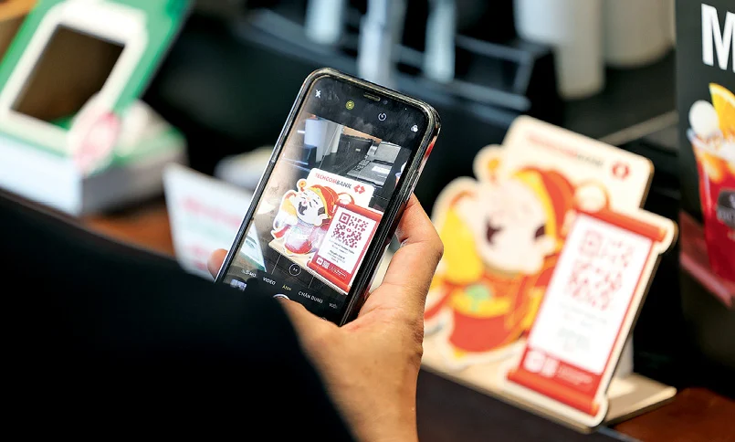

Đón thêm 2.6 triệu khách hàng: Bí quyết tạo nên tăng trưởng chưa từng có của 1 nhà băng

(VNF) - Chuyển đổi số đã đưa toàn bộ hoạt động của ngành ngân hàng lên môi trường mới, thay đổi mô hình hoạt động, đổi mới cách thức cung cấp sản phẩm, dịch vụ dựa trên công nghệ số và dữ liệu số.